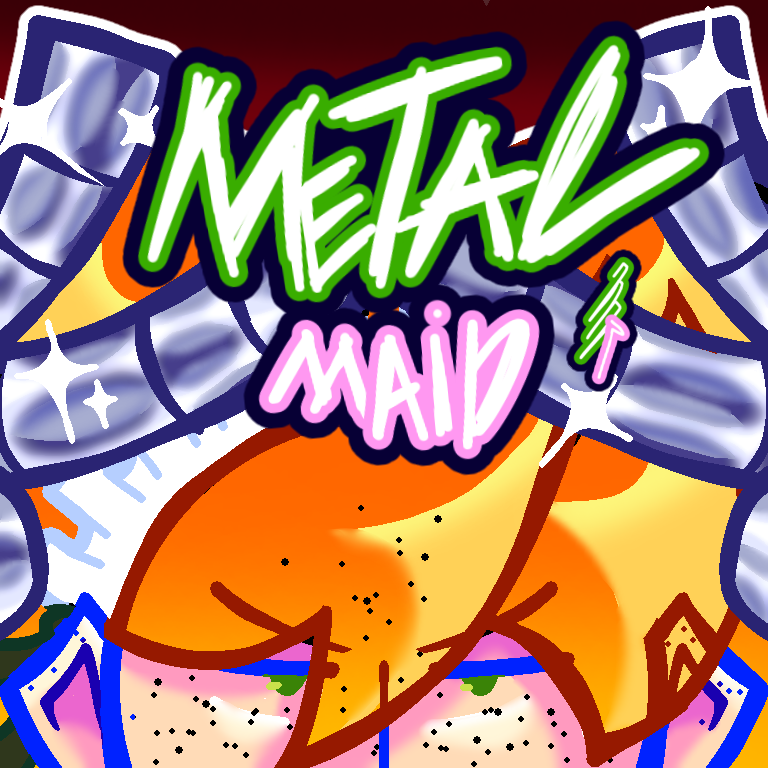

Neco Schneider
Neco é um android que não se lembra muito de seu passado. Ele é amigo de Rita e trabalha na Sei como agente espacial

Bem vindo a aba de personagens, aqui você podera ver todas as informações disponiveis sem spoilers, escritas pelo proprio criador da série. Os personagens vão aparecer conforme sua aparição na serie, no momento só ira ter 3 personagens disponiveis. Lembrando, DNR ainda é um projeto em desenvolvimento, algumas coisas podem mudar no futuro.

Neco é um android que não se lembra muito de seu passado. Ele é amigo de Rita e trabalha na Sei como agente espacial